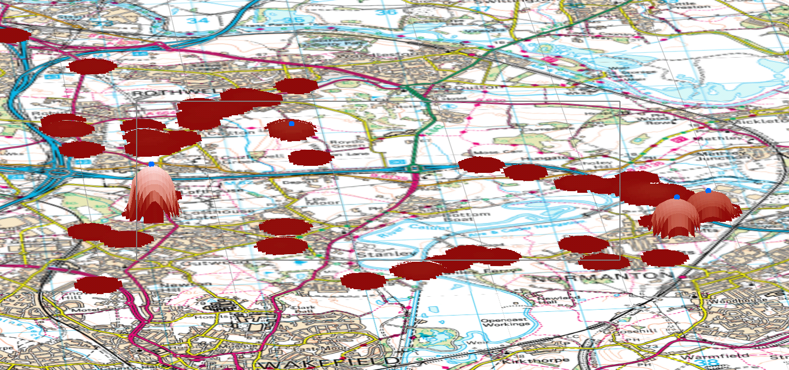
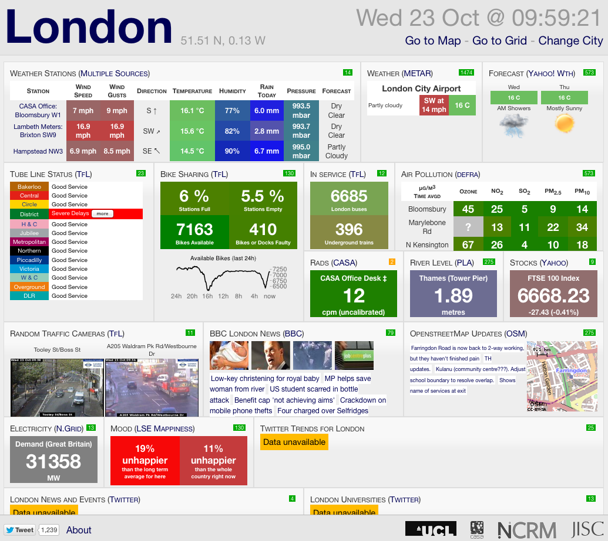

Principles of GIS
Big Data and Smart Cities
Dr Nick Malleson
School of Geography, University of Leeds
http://nickmalleson.co.uk/
http://www.geog.leeds.ac.uk/people/n.malleson
Reading
Here are some of the key texts for the lecture.
Mayer-Schonberger, V. and Cukier, K. (2013) Big Data: A Revolution That Will Transform How We Live, Work, and Think. John Murray
The "Big Data book" is quite famous and gives a great overview of many of the issues associated with the big data "revolution" (to quote the authors). It's also very readable.
Anderson, C., 2008. The End of Theory: The Data Deluge Makes the Scientific Method Obsolete. WIRED. Available online
Anderson's article in Wired magazine, in which he suggests that data are now so abundant that we no longer need theories to understand why things happen, was controversial and widely criticised. He makes an interesting argument, even if it is one he has since stepped away from.
Savage, M. and Burrows, R., 2007. The Coming Crisis of Empirical Sociology. Sociology 41, 885-899.
Savage & Burrows discuss the impact that huge new data sources will have on a field that has traditionally prided itself on developing statistical methods that work with small amounts of neat, well structured data.
Other Resources
Here are some good videos, news reports, etc. that are worth watching.
Kent Larson: Brilliant designs to fit more people in every city. TED talk.
A talk about designing modern cities. Discusses some interesting new research aimed at making cities more efficient and user-friendly.
BBC: Tomorrows Cities http://www.bbc.co.uk/news/technology-23517670
A series of reports exploring 'smart cities' innovations. In particular, this video looks at the ways that London is becoming a 'smart city'.
Wakefield, J. 2013. Tomorrow's cities: How big data is changing the world. BBC News. [Online]. Available from: Available online
A BBC news piece about big data and smart cities
BBC. 2013. Horizon - The Age of Big Data. Available on YouTube: http://www.youtube.com/watch?v=EsVy28pDsYo
BBC documentary that covers some of the new applications of big data. In particular, there is a section on how the L.A. Police Department are being directed by algorithms (developed by Jeff Brantingham's UC MASC Project) that predict emerging hot spots (often called Predictive Policing).
Outline
Abundance of Data
What kinds of information about individuals can are being captured right now?
social media (Facebook, Google, Twitter, etc)
movement data: Oyster cards, ANPR, air passengers ...
internet search terms
mobile telephone locations
market research
spatial data (Open Street Map etc.)
transaction data (loyalty cards, shopping habits, etc.)
patient data
schools data
sensed data: air quality, satellite imagery, noise levels ...
The Abundance of Data

In general, the amount of data being created by, and about, humans is proliferating.
90% of the world's data has been generated in the last two years ( Science Daily)
The amount of data is doubling every two years (EMC).
Total data will hit 8 zeta bytes by 2015 ( Silicon Angle).
If this were printed out on double-sided A4 sheets the pile of paper would stretch to the moon and back 10,000 times! (I've made this up so probably not one to quote, but you get the idea..).
The Big Data "Revolution"
In the social sciences:
"Datafication" (Mayer-Schonberger and Cukier, 2013)
friends, favourite places, moods, thoughts
Location as data
(particularly relevant to geographers)
'Crisis' in the social sciences
Outline
Context - Cities and Complex Systems
Recent work recognises the complex characteristics of cities (e.g. Batty, 2005)
Strong potential of individual-level methods (e.g. ABM)
BUT data are often insufficient
Excellent residential (night-time) population data (from censuses etc.).
Limited ambient (day-time) population data.
Potential for 'big' data sources to shed light on daily urban dynamics
Two examples...
1 - Simulating daily urban movements
Simulating daily urban movements

To begin with
Using twitter data to better understand how people use urban spaces
Identifying home areas, and other important places
Stage 1: Extract prolific users

Simulating daily urban movements
Stage 2 - Generate a message density surface
Kernel density estimation
Highlight areas with high spatial message density for individual users

Simulating daily urban movements
Stage 3 - Identify areas of 'unusually' high density (anchor points)
GIS method used to identify peaks in digital elevation data
Use Landserf free software (Java) [11]
Anchor points are centres of peaks
Assume highest peak is 'home'


2 - Populations at risk of street crime

Are crime hot spots stable under the application of different population-at-risk measures?
Which areas have the highest crime rates when using both residential (census) and mobile (social media) population at risk data?
The Population-At-Risk in Crime Analysis
The population at risk is fundamental for crime rate calculations
CrimeRate = Crime Count / Population At Risk
No consensus on the best population-at-risk measure to use
“a valid rate ... should form a probability statement, and therefore should be based on the risk or target group appropriate for each specific crime category” (Boggs, 1965)
Usually default to residential population
Residential Population
OK for some crime types
E.g. Burglary
But not for many others. E.g.:
Assaults (Boivin 2013)
Robbery (Zhang et al. 2012)
Violent crime (Andresen 2006, 2011)
So why use the residential population?
Data availability and resource constraints
More recent attempts to estimate the ambient population:
Proxies (Boggs, 1965). E.g. car park locations, pavement area, etc.
LandScan data (Andresen et al. 2012). Global estimates of average (24hr) population, resolution ~1km2

Social Media - Limitations
What are some of the limitations of research with social media?
Vote at: http://pollev.com/nickmalleson
Social Media - Limitations
Messiness / Noise
Not gathered using systematic / statistically guided methodology
Omissions are commonplace
No systematic corrections
Generalisability
The digital divide
E.g. higher socioeconomic status groups are over represented in Twitter and Flickr (Li et al., 2013)
Bias
Over-representation of the most prolific users
Or certain activities
Research with Social Media: Conclusions
Lots of limitations, but considerable potential:
Biased at present, but use of social media is rising
Important methodological progress
Best available data?
Considerable investment from the Government and Research Councils. E.g. the Consumer Data Research Centre at Leeds
Outline

Why 'Smart Cities'?
By 2030, the population living in UK cities is expected to rise from 79% (1950) to 92.2%
The Guardian, using World Resources Institute data)
Worldwide, the proportion is estimated to rise from 40% in 1990 to 70% by 2050
What are 'Smart Cities'?
We have seen how much (new) data are available
This is being used by businesses and by researchers
It could also be put to good use at improving the lives of people in cities
What are 'Smart Cities'?
Some definitions.
Smart city is a term that gets together in an integrated way those initiatives oriented at improving the quality of life, sustainability and efficient management of services while innovating in relation to the materials, resources and models used and using technology in an intensive manner. (CTECNO 2012)
[A city] that uses information and communications technologies to make the critical infrastructure components and services ... more aware, interactive and efficient (Belissent 2010)
A city [is] 'smart' when investments ... fuel sustainable economic growth and a high quality of life, with a wise management of natural resources, through participatory government. (Caragliu et al. 2009)
... the urban center of the future, made safe, secure, environmentally green, and efficient because all structures ... are designed, constructed and maintained making use of advanced, integrated materials, sensors, electronics, and networks which are interfaced with computerized systems comprised of databases, tracking, and decision-making algorithms. (Bowerman et al. 2000)
What are common to all of these definitions?
What are 'Smart Cities'?
'Smart Cities' are characterised by:
Abundance of data
Technologies for interpretation and adding value
Simulation
Visualisation
Animation
etc.
Mechanisms for feedback and control
Lots of examples to follow...
Outline
Intelligent Rubbish
Finding new ways to understand urban dynamics ...
(example from the Trash Truck project)
Intelligent Traffic Systems
Stockholm becomes 'Green Capital'
Part of this thanks to intelligent traffic systems designed with IBM:
To help Stockholm overcome its traffic congestion problems, IBM helped them develop a road charging system that covers a 24-square-kilometer area of the inner city with 18 barrier-free control points equipped with cameras and a mix of payment channels. This project resulted in a 50 percent drop in morning traffic waiting time, an increase of 60,000 passengers per day in public transportation ridership and an overall improved quality of life for the residents of Stockholm.
Intelligent Traffic Systems
Or you could go one step further...
City Dashboards - London
A way to collect and present data from a variety of different sources
Become an integral part of urban planning and management?
Support a feedback loop; people make decisions based on dynamic, real-time data.
Empowering citizens with knowledge about where they live?
City Dashboards - Leeds
City Dashboards - Singapore
Or, if you are MIT, the dashboard looks more like this...
A project as part of the MIT Senseable Cities Laboratory.
Efficient Parcel Delivery
Not all projects are still in planning, some are a reality.
UPS adopted a new route-finding system called ORION (On-Road Integration Optimisation and Navigation)
Massive data-crunching algorithm (all trucks have sensors)
Optimises parcel routes (even trying to avoid left turns)
Some numbers ( Wired magazine):
85 million miles saved
15 trillion trillion (15,000,000,000,000,000,000,000,000) possible routes for a driver with 25 packages
$30 million saved per year if each driver travels one fewer mile each day.
Outline
A force for good or for evil?
Some people are very optimistic about the possibilities offered by 'Smart Cities' (e.g. Batty, 2012).
Opportunities
A deeper understanding of how urban systems function (at least in the short term).
Manage disruption / emergencies - understand points of failure
Improve quality of life
Manage burgeoning urban populations
Democratisation of urban management (through public data)
A force for good or for evil?
But others are less so (e.g. Galdon-Clavell, 2013).
Risks
How to align 'smart cities' with
informed consent
privacy and data protection
dual use
non-discrimination
Risks of abuse (big brother)
E.g. "Surveillance ... has challenged and undermined the right of all humans to "remain unobserved and unmolested" in their thoughts, personal environments and communications." (The Guardian, 2013).
Market driven, anti-democratic
This all sounds awesome, but have you spotted the flaw in the plan? In such a smart city, the control systems would all be programmed, installed and managed by IBM and CISCO. These private companies would have huge, billion-dollar contracts to manage the biggest cities in the world. When Ops Centres around the world are eventually automated, IBM's software will effectively become your digital mayor - or tyrant. ... IBM would become a de facto member of the government. After all, politicians might tell IBM how they want a city to be run, but it's IBM's implementation that ultimately matters. A new law might decree that smart cars travelling in smart cities must be limited to 30 mph - but what if IBM disagrees, or says the system doesn't have that capability, or simply takes six months to implement the change?(Anthony, 2012).
Outline
Conclusions
Abundance of new data
Business already exploiting new sources
Potentially use these data to better understand urban dynamics
Lots of examples of new 'smart cities' initiatives
CISCO Smart + Connected Communities
Ultimately improve quality of life (?)
Big questions around data protection, privacy, ethics and surveillance.